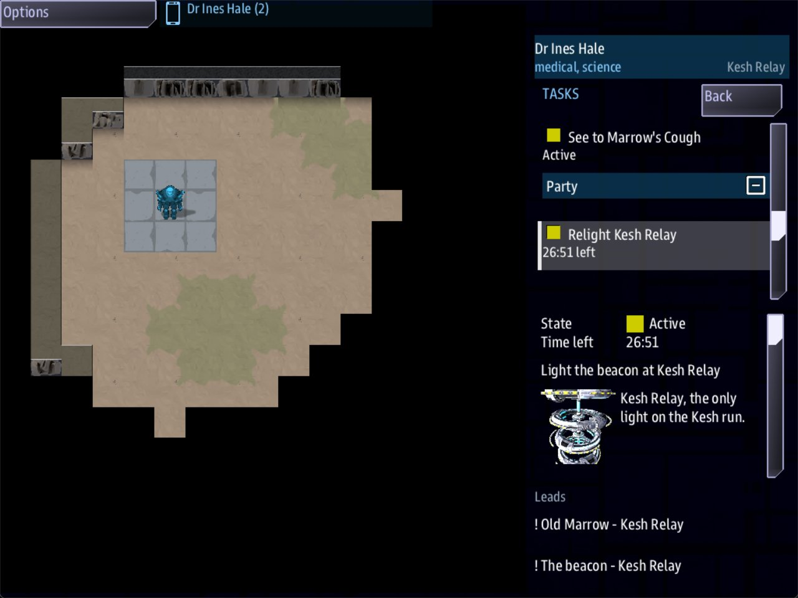

Class 3, Lecture 14 - Pacing an away mission¶
What you will have at the end¶
A sheet of paper that says how long your mission is, and a mission that agrees with it.
You will measure MyAway with the game's own numbers: how fast a crew member walks, how
fast a hostile hits, what a fight costs, what a failed roll costs. You will count the
presses. Then you will put a clock on the mission, check by hand that every party can
reach every ending, and look at what three people are doing in the same minute.
The hand check finds two things wrong with the mission you finished in Lecture 12. You fix both. Each fix is one line.

Dr Hale's Tasks app just after she beams down: Relight Kesh Relay shows the time left in the list and again on its page.Only mission.amd changes. Three records, five lines.
The video¶
About 7 minutes. Subtitles are available in the player.
Before you start¶
MyAwayas Lecture 13 left it.sbs lint MyAwaysaysclean.- A sheet of paper and a pencil.
- A command prompt open in
C:\Cosmos\data\missions.
Words for this lecture:
| Word | Meaning |
|---|---|
| Floor | The shortest time a thing can take: walking and waiting, with no reading |
| Press | One answer taken in a scene |
| Track | What one crew member does from landing to the end |
| Chain | Steps that each wait for the one before. Only one person is ever busy |
A warning about every number on this page. They were measured in a stand-in for the game, with stand-in consoles driven by a script. A script walks at the game's speed, and it presses the instant a button appears. It never reads, never argues and never gets lost. So these numbers are floors. Real people are slower. Nobody has timed a real table on this mission, and where this page turns a floor into minutes it says that it is guessing.
Step 1 - The game's own numbers¶
Write these on your sheet. Each was measured on your map, or read from the Fire app.
| What | How much |
|---|---|
| A crew member walks | 4 cells a second |
| Your sentry and your crawler walk | 2 cells a second: their Speed: line |
| A hostile beside you hits | After about two and a half seconds, then again every two and a half |
| One crew member, standing still, is down | In 7.4 seconds: three hits, one point each |
| Two crew members, standing still, are both down | In about 12 seconds, when one began a point short. The hostile takes them one at a time |
| Somebody down, with the others still up | Stays down. A minute later he was still down. He needs a medkit |
| Everybody on the ground down | They wake at the area's entry: with 1 point each, between five and ten seconds later |
| The Fire app reaches | 6 cells, in a straight line of sight |
| A FULL shot | Puts any hostile down in one shot, whatever its HP: |
| A CUT shot | Takes one point |
| A STUN shot | Holds for the hostile's Stun: seconds: 10 for the sentry, 8 for the crawler |
| One shot costs | Three touches: a setting, Arm, a click on the map. After a shot the weapon is safe again, so each further shot is two more |
| A skill check on a door | Can be tried again at once, as often as you like |
| A skill check in a scene | Costs the presses to get back to it. A failed roll goes to the else room |
And the odds of a check, for a ten sided die plus the skill:
| Skill | Against 8 | Against 9 | Against 10 | Against 11 |
|---|---|---|---|---|
| 4 | 7 in 10 | 6 in 10 | 5 in 10 | 4 in 10 |
| 1 | 4 in 10 | 3 in 10 | 2 in 10 | 1 in 10 |
Read the hostile rows again. Seven seconds is not long. In those seven seconds a real crew member has to open Fire, choose, press Arm and click. So a hostile is the one thing on your map that is faster than your players.
Step 2 - Walk your own map¶
Count the cells the game walks, and divide by four.
| The walk | Cells | Seconds |
|---|---|---|
| Landing pad to the way east | 28 | 7 |
| Landing pad to the relay door | 21 | 5 |
| Gully mouth to the pump house door | 9 | 2 |
| The gully's west edge to the stairs, through the door | 24 | 6 |
| Foot of the stairs to the spare cell | 12 | 3 |
Add up the longest road in the mission: out to the cell and back to the beacon. It is under a minute.
That is the first lesson of this lecture. Distance is not what makes a mission long. A door on the far side of the map costs your crew seven seconds. A second area costs them six. If the walk felt long when you played, it was because you were reading on the way.
There is a faster way than walking, too. Once an area is known, the handheld's Beam app
puts a crew member there at once. Your cistern says beam: no. That one line is what
makes the stairs matter.
Step 3 - Count the presses¶
What takes the time is reading and deciding. Count it.
| Scene | Rooms | Choices | Words in its lines |
|---|---|---|---|
| Old Marrow | 7 | 18 | 241 |
| The yard terminal | 7 | 13 | 196 |
| Pim | 6 | 15 | 187 |
| The pump panel | 4 | 7 | 113 |
| The beacon | 4 | 7 | 104 |
| Pim, at home | 2 | 3 | 51 |
| The notice | 1 | 1 | 26 |
| All of them | 31 | 64 | 918 |
Those are the files as this lecture leaves them. Every scene can be left in one press.
Now three plays of your mission, by script, and what each cost:
| The play | Walking and waiting | Presses |
|---|---|---|
| Ens Vale alone, the short road: shoot the sentry, take its cell, the keycard, the beacon | 19 seconds | 2 |
| Chief Okoro alone, the long road, every story on the way | 49 seconds | 11 |
| Three crew, the long road, every story | 68 seconds | 11 between them |
Look at the first row before anything else. Your mission can be won in two presses. Old Marrow even says how. A crew that shoots first never meets Pim. That is the starter's design, and for a first mission it is a kind one. Know that it is there. Your capstone will not have a road that short.
To turn presses into minutes you need one number nobody has measured: how long a real crew takes over one press. Somebody reads the line aloud, about 27 words. Then the party talks. My guess is half a minute a press, and I double the total for a crew playing it the first time. Write your own guess beside mine, and correct it the first time you watch people play.
| The road | Presses on the busiest console | At half a minute each | Doubled, for a first play |
|---|---|---|---|
| The short road | 2 | 1 minute | 2 minutes |
| The long road, alone | 11 | 6 minutes | 11 minutes |
| One person who opens every room: my estimate, from 31 rooms | 40 | 20 minutes | 40 minutes |
So this mission is between two minutes and forty. That is a wide answer, and it is the honest one. The way to narrow it is to give the crew fewer ways to skip, and that is a writing choice, not a measurement.
Step 4 - Four ways to press on a crew¶
You have four tools. You have used every one.
| The tool | In your file | What it costs the crew |
|---|---|---|
| A clock | Fails when: on a quest with a Lose: line. You add it in Step 5 |
Every minute, from the moment the quest starts |
| A patrol | Patrol:, Notice: and Speed: on the sentry. Its square is 18 cells, so it comes round every 9 seconds |
Timing. The keycard lies on its path, and the yard terminal is inside its notice |
| A door that needs a key from somewhere else | The pump house door in the gully, the brass key by the tent | Not seconds: a crossing is 7. It costs knowing where to look |
| A hidden thing | Hidden until: on the two medical kits, the spare cell, and Pim by the tent |
A conversation. Somebody has to ask the right person |
Only the first two press on a crew that knows what to do. The last two press on a crew that does not know yet. A good mission uses both kinds: something to work out, and a reason to hurry while you do.
Step 5 - A clock¶
You wrote Fails when: in Class 1. It works the same on the ground.
Find Relight Kesh Relay in the Quests section. Add one line above Win:, and change
the Lose: line:
Leads to: beacon
Fails when: 30 minutes
Win: The beacon is lit. Every convoy on the Kesh run has its way home again.
Lose: Kesh Relay stays dark. The convoy comes through blind, and must find another road.
Then tell the bridge about the clock. In the same quest's description, under the
paragraph that ends Go down and light it., leave a blank line and add:
and a blank line under it, so the table still starts on its own. It is the icon line from Lecture 6.
The Lose: sentence had to change. It used to say the beacon was slag. Now the same
sentence is read after the governor, after the fire in the pump house, and when the
clock runs out. Write a Lose: that is true every way the quest can fail.
Save, and run lint. It says clean.
Thirty minutes comes from Step 3: longer than a first play that reads most things, and shorter than one that reads everything twice. It is a guess until you have watched a crew.
Played, the Tasks app shows the clock under the quest, on every handheld on the ground. Tasks opens on your own story first: pick Relight Kesh Relay in the list.
The quest's page under the list has a Time left row too. Aboard, the ship's quest list
shows the same line and the quest's page the same row, so the bridge can call the time
down. Do not expect it to read thirty when you land: the clock runs from the start of the
map, so by the time anybody beams down it is already a few minutes under.
Tried for this page with Fails when: 25 seconds: the game ended with the party on the
ground, and the last screen read the new Lose: sentence.
One thing to know. The clock starts when the quest starts, and this quest starts with the game. A real crew spends minutes choosing consoles before anybody beams down. On this mission that is their own time. Lecture 16 starts its clock from an answer on the ground.
Step 6 - Can every party get there?¶
Lint does not walk your map. You do, on paper, in three lists. For each line, write who
can do it. Use four words: anyone, a job (covered, so anyone in the end), a
skill or a Needs: (only that person), and luck (a check).
Every area.
| Area | The way in | Who |
|---|---|---|
| Kesh Relay | Beam down | Anyone |
| Dry Gully | Walk east | Anyone |
| Pump House Cistern | The pump house door: the brass key, or a check, or a CUT shot | Anyone. The key is in the yard |
| The cistern, past the sluice | The pump has to run: the panel, and three fuses | Only an engineer. The panel says Needs: engineering |
Every item.
| Item | Where | Who |
|---|---|---|
| Relay keycard | The yard, on the sentry's path | Anyone |
| Pump house key | By the tent | Anyone |
| Medical kit | Ask Marrow. Ask Pim | Anyone |
| Two fuses | The toolbox in the gully | Anyone |
| A third fuse | Pim, for her tablet | Anyone who has put the crawler down |
| Power cell | The sentry drops one | Anyone, with one FULL shot |
| Power cell | The spare, past the sluice | Only a party with an engineer |
Every ending.
| Ending | The last answer | Who |
|---|---|---|
| Win | Fit the power cell, at the beacon |
Anyone holding a cell |
| Win | Bring it up by hand |
An engineer, with luck: 4 in 10. Anyone covering: 1 in 10 or worse |
| Lose | The governor | Anyone |
| Lose | The crowbar | An engineer, at the panel |
| Lose | The clock | Everyone |
Now look for a party the lists leave stuck. Take Dr Hale and Lt Reyes: a scientist and a guard, no engineer.
First she has to reach the terminal alive. The yard terminal is inside the sentry's
notice: every cell beside it is four cells or less from the sentry's square, so a
doctor standing there is seen, and shot. This is the patrol from Step 4, costing the crew
timing. So Lt Reyes goes first. Dr Hale waits five cells west of the terminal, where the
sentry cannot notice her. Reyes opens Fire, chooses STUN, presses Arm and
clicks the sentry. It holds for its Stun: seconds, ten. While it stands, Dr Hale walks
to the terminal and answers: Pull the door code out of its memory, Copy it down,
Send the sentry its recognition update. If the stun runs out first, Reyes stuns it
again: two more touches, Arm and a click.
Expect to miss. A shot goes to the cell you clicked, and a hostile that is walking may have left it by then. Nothing on the handheld tells you that a shot missed, or that it hit, or that it killed: the Fire app goes back to SAFE either way. Watch the map.
Ten seconds is less than three answers take somebody who reads them, so expect the second stun. That is Step 1 again: a hostile is the one thing on your map that is faster than your players. And STUN, not FULL. A FULL shot puts the sentry down, its cell falls where it stands, and this party never meets the problem below.
Dr Hale is good enough to pull the door code, and the terminal then offers her Send the
sentry its recognition update. She takes it. It is the clever answer, and the mission
taught her to find it.
The sentry is calm now, and it keeps its cell. The spare is past the sluice, and nobody here can run the pump. The clever answer has left this party with no power cell.
And there is no way back to it. Somebody calm is not harmed by any shot, STUN, CUT or FULL, so the sentry cannot be put down for its cell any more. Nothing in the game says so: the party is simply stuck.
Fix it where it broke. Find the line in The Yard Terminal and add an outcome:
- [Send the sentry its recognition update](terminal_update) if learned codes ; calm sentry, give power_cell
and change the line of Recognition Update to say what happened:
% The terminal sends nine days of crew lists in one burst. The sentry stops, walks to the terminal, opens its chest and sets a power cell in your hands. Then it goes back to its square with its weapon down.
Save and run lint: clean. Played again the same way, Reyes's stun first, Dr Hale's pack
read power cell x1. The map does not act the line out: the sentry stays standing where
the stun caught it, calm and harmless, and the cell is simply in her pack.
That is what the three lists are for. Every mistake of this kind is two good ideas from two different lectures that nobody put side by side.
Step 7 - What three crew do at once¶
Draw three columns on your sheet, one for each console, and write down what each person is doing from the landing to the win. This is the mission as Lecture 13 left it:
| Where | Dr Hale | Lt Reyes | Chief Okoro |
|---|---|---|---|
| The yard | Marrow's cough | The sentry | The brass key |
| The gully | The toolbox. Pim. The door. The panel: two fuses, one short | ||
| The cistern | The crawler. The tablet | ||
| The gully again | Gives Pim the tablet, gets a fuse, hands it over | Three fuses. The pump | |
| The cistern again | The spare cell | ||
| The yard again | The beacon |
Count the presses in that play: 12, and Chief Okoro made 8 of them. Dr Hale was finished in the first ten seconds. And on the stand-in's clock, three crew took 56 seconds and Chief Okoro alone took 59.
That is a chain. The tablet waits for the crawler. The fuse waits for the tablet. The pump waits for the fuse, the cell for the pump, the beacon for the cell. However many people you send, one of them is working and the others are watching.
The cure is to make the thing in the middle need pieces from three places, so three people can each bring one. Your pump already needs three fuses. Two are in the gully and one comes down the chain. Move the supply: give Marrow a fuse to pay with.
Find the cough line in Old Marrow and add an outcome:
and change the line of Dust Lung:
% You listen to his chest for a long minute. Dust lung, nine days of it, and nothing that will not mend. He takes the inhaler like it is made of glass, and pays for it with the fuse out of his kettle.
Save and run lint: clean. On her handheld, Dust Lung now ends with the fuse, and the fuse
is in her Pack. Now the sheet reads:
| Where | Dr Hale | Lt Reyes | Chief Okoro |
|---|---|---|---|
| The yard | Marrow's cough: a fuse. The keycard. The relay door | The sentry | The brass key |
| The gully | Carries her fuse to the pump house | Pim's promise. The pump house door | The toolbox: two fuses. The panel |
| The join | Hands her fuse over | Three fuses. The pump | |
| The cistern | The crawler. The tablet | The spare cell | |
| The way back | Pim: 100 credits | The beacon |
Played that way by script: 11 presses, and they were 2, 5 and 4. Nobody made more than five. Pim's tablet is now a story on the side, with a spare fuse in it for a party that wants to try the wire.
On the stand-in's clock this play took 68 seconds, and Chief Okoro alone took 49. Do not be alarmed. The stand-in does not read, so three people reading three scenes at the same time saved it nothing, and two hand-overs cost it a few seconds of standing still. At a real table the busiest console went from eight presses to five. By Step 3's guess that is a minute and a half saved, three on a first play, and two people who are no longer watching.
Step 8 - The beat sheet, with times¶
Put it together. This is the long road with three crew, as the script walked it. The first column is measured. The second is Step 3's guess, and it is only a guess.
| Beat | On the stand-in's clock | My guess for a first play that reads most rooms |
|---|---|---|
| Beam down | 0:00 | 0 |
| The sentry is down | 0:03 | 2 minutes |
| The pump house door is open | 0:19 | 6 |
| Three fuses are in one pack | 0:42 | 10 |
| The cistern is draining | 0:48 | 12 |
| The crawler is down | 0:50 | 14 |
| The spare cell is in a pack | 0:55 | 17 |
| Pim has her tablet | 1:02 | 19 |
| The last press at the beacon | 1:08 | 22 |
Twenty-two minutes against a clock of thirty. That leaves a first-time crew eight minutes to get lost in, and it is about right.
For a mission of forty-five minutes, write the sheet before you write the mission:
| Beat | Minutes | What goes there |
|---|---|---|
| Landing, and the first person | 5 | One scene everybody reads. It asks the question |
| Three tracks | 20 | One for each job, in different places, each ending with a thing to carry or a fact |
| The join | 8 | A door, a machine or a person that needs all three |
| The last area | 7 | The one place nobody could beam to. The hostile that matters |
| The ending | 5 | One room, two answers |
At half a minute a press, doubled, twenty minutes of tracks is about twenty presses on each console. Lecture 16 builds exactly that.
Step 9 - Check it¶
Each row was tried on the finished files, one change at a time.
| The mistake | What lint says |
|---|---|
Fails when: 30, with no unit |
unknown-trigger. Its sentence shows how to write a time |
Fails when: thirty minutes |
unknown-trigger |
Fail when: 30 minutes |
unknown-field. It guesses Fails when |
; calm sentry give power_cell, with no comma |
outcome-run-together: the cell is never given |
; calm sentry, give power cell, with a space |
pack-item-shape: the game skips this whole answer, so the sentry is not calmed either |
The last one, as lint printed it:
[WARNING] line 492: `give power_cell` is read as part of `calm sentry`, so it never happens. Outcomes are separated by a comma: `; calm sentry, give power_cell` (outcome-run-together)
What lint cannot see¶
All of these lint clean.
| The mistake | What happens |
|---|---|
The clock kept, and the Lose: line deleted |
When the time is up the quest fails and the game goes on. It can no longer be won, and nothing says so. Played |
; calm sentry, give power_sell |
Lint has no list of items. Not played |
| A party the three lists leave stuck | Nothing, until that party plays it |
| A chain | Nothing. Two of your crew watch the third |
| A clock too short for the reading | The crew loses with a room still open |
So the three lists and the three columns are yours to do, with a pencil, every time you
add a door, a Needs:, or an answer that calms, takes or hides something.
Step 10 - Play it¶
Play the long road with three people, each on their own track from Step 7's second sheet. Lt Reyes deals with the sentry before anybody goes to the keycard, the relay door or the terminal: all three are inside its notice. Before you start, start a stopwatch. Write the time beside each beat in Step 8.
Then play it again, and have one console do nothing but open Tasks and call out the clock.
Your numbers replace my guesses. Keep the sheet. It is the first thing you will reach for in Lecture 16.
If something goes wrong¶
| What you see | Why | What to do |
|---|---|---|
Lint says unknown-trigger on the Fails when: line |
The time is not a number and a unit | Write 30 minutes |
| The time runs out and nothing happens | The quest has no Lose: line |
Put it back. Lint cannot see it |
| The game is lost while the crew is still choosing consoles | The clock starts with the quest, and the quest starts with the game | Make the time longer, or see Lecture 16 |
| Dr Hale goes down at the yard terminal | The terminal is inside the sentry's notice | Have Lt Reyes STUN the sentry first, and stun it again if it wakes before she is done. Step 6 |
| The sentry is calm and nobody has a cell | The answer is missing , give power_cell, or the comma |
Step 6. Lint warns about a missing comma |
| Dr Hale has a fuse and cannot fit it | The panel needs an engineer. A fuse is fitted from the pack of the one who answers | Stand next to Chief Okoro and use Give to, in the Pack app |
Exercise¶
- Do the three lists of Step 6 for a party of one: Lt Ross, your helm officer. Which ending can she reach, and by which road?
- Write the three columns of Step 7 for a party of two, Dr Hale and Lt Reyes. Is anybody watching?
- The short road wins in two presses. Close it without taking it away: decide what the sentry's cell should cost. Write the change on paper first.
- Change
Fails when: 30 minutestoFails when: 90 secondsand play the long road alone. How far do you get? Put it back. - Break it and read lint: the clock with no unit; the
givewith no comma; theLose:line deleted. Which one does lint miss?
Then answer on paper, from the file alone:
- Which one line makes a party without an engineer unable to reach the spare cell?
- Name every answer in the mission that can lose the game.
- Where does each of the three fuses come from, and who can fetch it?
Checkpoint¶
You are done when all five are true:
sbs lint MyAwaysaysclean.- Your sheet has the game's numbers, your walks, your presses, three lists and three columns.
- The Tasks app shows a time under Relight Kesh Relay.
- A party with no engineer that calms the sentry still has a power cell.
- You have played the long road with a stopwatch, and written your own times beside the guesses.
Next¶
Lecture 15 boards a ship: a deck the game draws for you. Lecture 16 is your own long away mission, and it starts from the sheet you just made.
Further reading¶
Nothing here is needed for the next lecture.
- "Quests" in the library documentation:
Fails when:,Win:andLose:. - "Boarding parties" in the library documentation: "A visit on a tile map", the table row "Everybody down".
- The notes at the top of
quiet_shore.amd, which you read in Lecture 1: what its author learned about what every party can reach.
Download this lecture's finished files (a zip of its example folder).